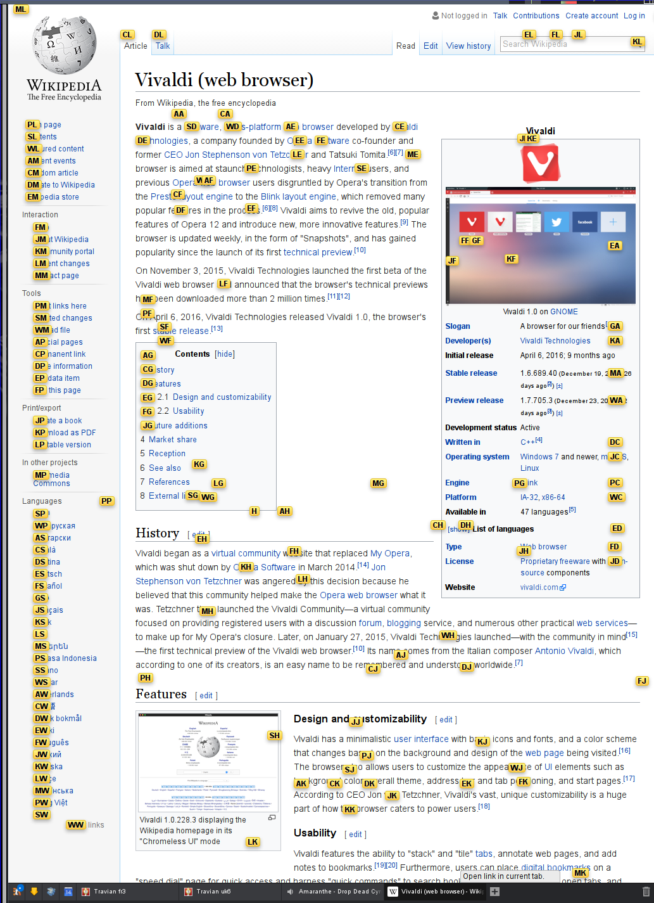

Vivaldi + Vimium = Finally no more Firefox!
I've been using the Pentadactyl Firefox extension for a long time. This extensions "vimifies" Firefox and it does a very good job of it. This is probably the best extension I have ever seen on any browser. This post is really not against Pentadactyl, this is a great addon and it still works great.
However, I have been more and more dissatisfied of Mozilla Firefox over the years. Indeed, the browser is becoming slower and slower all the time and I'm experiencing more and more issues on Gentoo with it. But the biggest problem I've with Firefox right now is the philosophy of the developers that is really crappy. Currently, there is only one thing that is good in Firefox compared to the other browsers, its extensions. Basically, an extension in Firefox can do almost anything. Pentadactyl is able to transform most of the interface and get rid of all of the useless parts of the interface. It is currently impossible to do so in other browsers. These powerful addons are using the XUL/XPCOM programming interface to do so. Pentadactyl is the only reason I've kept to Firefox so long. But Firefox has announced, already more than a year ago, that it will deprecate its XUL/XPCOM interface in favour of webextensions. This means that a lot of very good addons will not be able to work anymore once the deprecation has been completed. Several writers of popular Firefox have announced that they will not even try to port their addons and some addons will simply not be possible anymore. This is the case for Pentadactyl which is on the line for when the deprecation occurs. The data for deprecated has already been delayed but is likely to come anyway.
For several months, I've been looking at several possible replacements for my current Pentadactyl browser. I've tried qutebrowser, but it is really too limited in terms of features so far. I've also tried again Chromium which is a great browser but unfortunately, there are very few possibilities for addons to modify the interface. Vimium is a great addon for Chromium which is basically the very much more lightweight alternative to Pentadactyl. It has much less features, but most of the missing features are simply things that cannot be done in Chromium.
Only recently did I test Vivaldi. Vivaldi is a free multi-platform browser, based on Chromium and supporting Chromium extensions. The major difference with Chrome is how the UI is customizable, due to the use of a dynamic UI, stylable with CSS. With the customizability of Vivaldi plus the great shortcuts and vim-like behaviour of vimium, I really feel like I found a new Pentadactyl with the advantage of not having to bear Firefox!
Here is how it is looking with the follow URLs feature from vimium:
Note: The gray bar on the left is the console to the left and the top kind of bar is awesome wm, they are not part of the browser.
I'm using the dark theme with native windows. I've disabled the address bar, moved the tab bar to the bottom and completely hidden the side panel. All that remained was the title bar and the scroll bar.
To get rid of the title bar, you can use CSS. First, you have to only display the Vivaldi button in the settings page. Then, you can use this custom CSS:
button.vivaldi { display: none !important; } #header { min-height: 0 !important; z-index: auto !important; } .button-toolbar.home { display: none }
to hide the title completely! To get rid of the scroll bar, you need to use the Stylish extension and use this custom CSS:
::-webkit-scrollbar{display:none !important; width:0px;} ::-webkit-scrollbar-button,::-webkit-scrollbar-track{display:none !important;} ::-webkit-scrollbar-thumb{display: none !important;} ::-webkit-scrollbar-track{display: none !important;}
And then, no more scroll bar :)
If you want to have full HTML5 video support, you need to install extra codecs. On Gentoo, I've uploaded a ebuild on my overlay (wichtounet on layman) with the name vivaldi-ffmpeg-codecs and everything should be working fine :)
Vimium is clearly inferior to Pentadactyl in that for instance it only works in web page, not in system page and you still have to use the browser for a few things, but it does not seem too bar so far. Moreover, I wasn't using all the features of Pentadactyl. I haven't been used this browser for a long time, so maybe there are things that I will miss from Pentadactyl, but I won't certainly miss Firefox!
Comments
Comments powered by Disqus